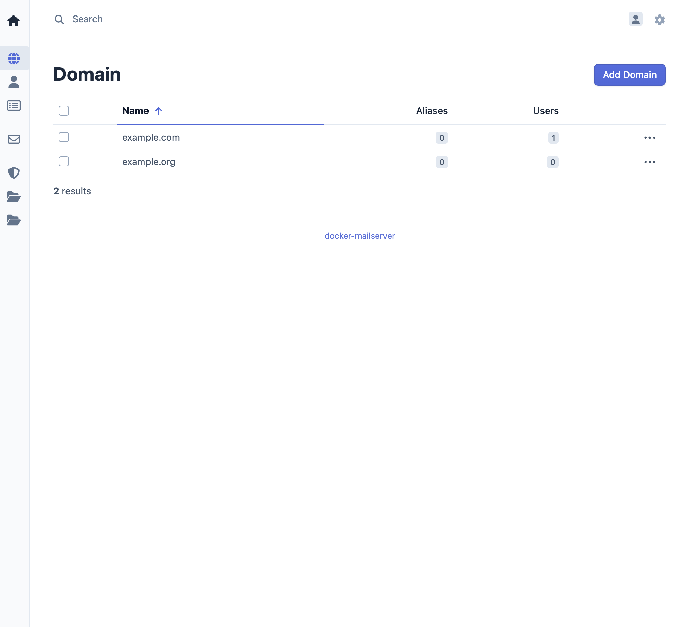

How to Manage Domains
Domains define the email namespaces your mailserver handles. All addresses must belong to a configured domain. Only users with Admin role can add, edit, or delete domains; Domain Admins and regular users cannot.
Add a domain
- Log in to the management interface.
- Open Domain in the menu.
- Click Add Domain.
- Enter the domain name (e.g.
example.com). - Save.
The domain must be a valid domain name. It is available for users and aliases immediately.

Delete a domain
- Open Domain in the menu.
- Select the domain to delete.
- Confirm the deletion.
Deleting a domain removes all associated users, aliases, and DKIM configuration. This cannot be undone. Back up data before deleting.
Changing a domain name
Changing the domain name is not supported. To use a different name, delete the domain and add a new one with the new name (and reconfigure users/aliases as needed).
For access control details, see User roles reference.